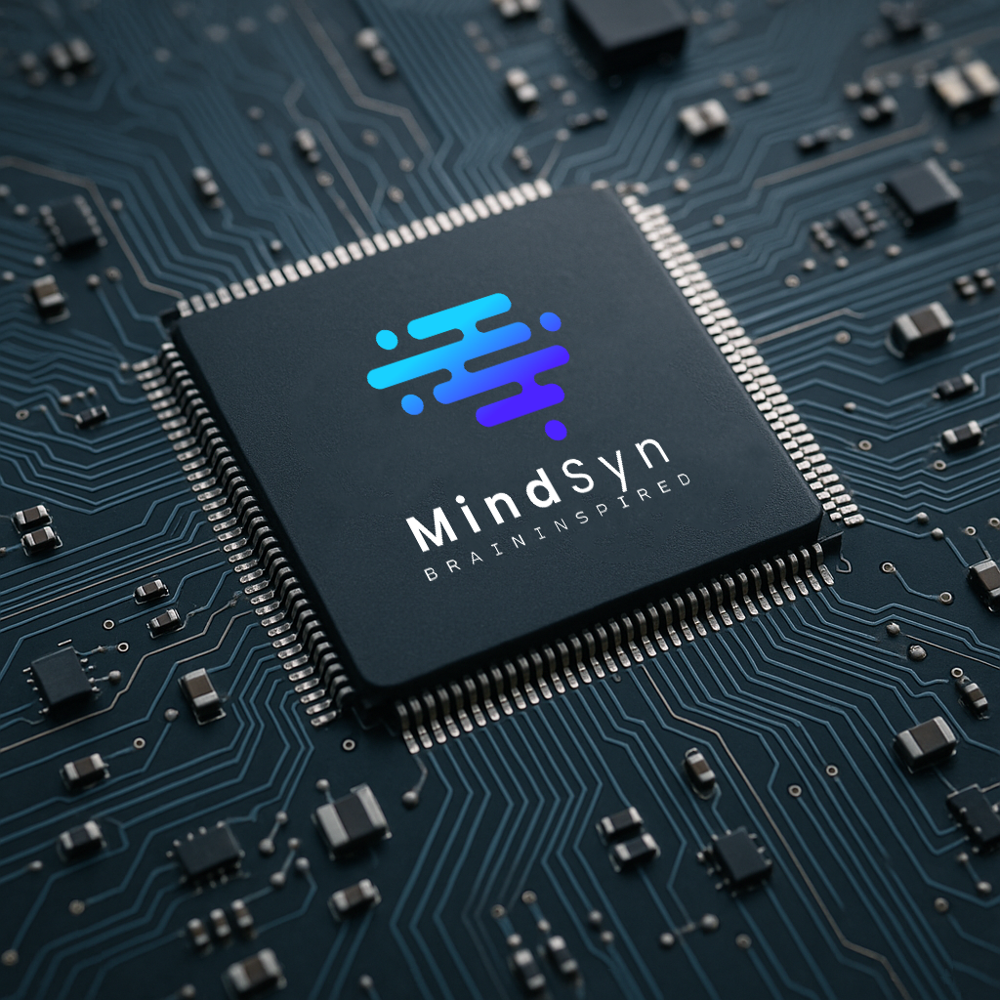
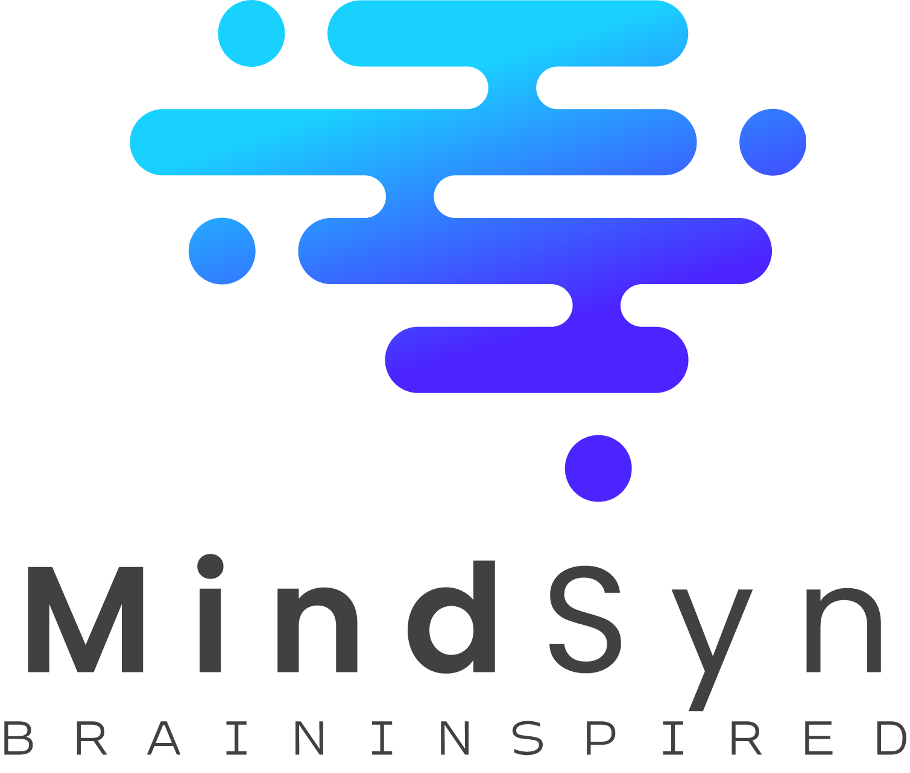
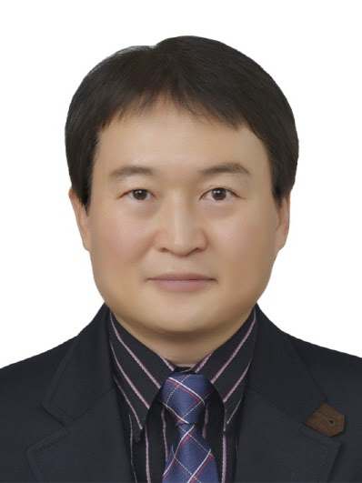

차세대 뇌 기반 인공지능 기술을 선도합니다
생물학적 신경망의 효율성을 모방한 뉴로모픽 AI 반도체 MindCore
저전력, 고성능 온디바이스 AI의 새로운 패러다임을 제시합니다

MindSyn은 생물학적 뇌의 작동 원리에서 영감을 받은 뉴로모픽 기술을 개발하는 혁신적인 AI 스타트업입니다.
우리의 미션은 저전력, 고효율의 뇌 기반 컴퓨팅 솔루션을 통해 인공지능의 에너지 효율성을 획기적으로 개선하는 것입니다. Event-driven 처리 방식과 시간 정보를 활용한 temporal coding으로 기존 딥러닝 대비 혁신적인 성능을 제공합니다.
에너지 효율 향상
이벤트 기반 처리
최적화된 솔루션

차세대 뉴로모픽 AI 프로세서 (Coming 2026)
MindCore는 MindSyn이 개발 중인 차세대 뉴로모픽 프로세서입니다. 현재 FPGA 환경에서 검증을 완료하였으며, 생물학적 뇌의 효율성을 하드웨어로 구현하여 Spiking Neural Networks를 가속화합니다. 2026년 상반기 ASIC 제조(Fabrication)를 통해 획기적인 에너지 효율성과 실시간 처리 성능을 갖춘 상용 칩으로 출시될 예정입니다.
MindCore의 정확한 기술 사양은 ASIC 제조 및 최적화 완료 후
2026년 상반기에 공개될 예정입니다.
실제 뇌 뉴런의 Leaky Integrate-and-Fire (LIF) 모델을 하드웨어로 구현하여 생물학적 신경망의 동작을 정확히 재현합니다.
스파이크 이벤트가 발생할 때만 연산을 수행하는 비동기 방식으로 불필요한 전력 소비를 최소화합니다.
STDP (Spike-Timing-Dependent Plasticity) 기반 온칩 학습으로 실시간 적응형 AI를 구현합니다.
다중 칩 확장 가능한 아키텍처로 대규모 신경망 시스템 구축이 가능합니다.
1ms 이하의 초저지연 추론으로 실시간 의사결정이 필요한 애플리케이션에 최적화되었습니다.
초저전력 설계로 태양광, 진동 등 에너지 하베스팅 환경에서도 동작 가능합니다.
IoT 디바이스, 드론, 로봇에서 실시간 AI 처리
저전력 환경 인식 및 실시간 의사결정
웨어러블 헬스케어 AI 진단 시스템
이벤트 카메라 기반 실시간 객체 추적
생물학적 뉴런의 스파이킹 메커니즘을 모방한 차세대 신경망 아키텍처로 시간적 정보 처리에 최적화
이벤트가 발생할 때만 계산을 수행하여 불필요한 연산을 제거하고 전력 소비를 최소화
고급 학습 알고리즘과 최적화 기법을 통해 SNN의 성능을 전통적인 딥러닝 수준으로 향상
모바일 및 IoT 디바이스를 위한 초저전력 온디바이스 AI 솔루션 제공
MindCore 동작 데모 영상
MindCore가 MNIST 데이터셋의 손글씨 숫자를 실시간으로 인식하는 과정을 보여줍니다. Spiking Neural Network를 활용하여 낮은 전력으로 높은 정확도를 달성합니다.
이벤트 카메라로 촬영된 N-MNIST 데이터를 처리하는 MindCore의 능력을 보여줍니다. Event-driven 방식으로 더욱 효율적인 추론이 가능합니다.
시간 정보가 중요한 ADFTD 데이터셋에서 MindCore의 temporal coding 기술을 활용한 실시간 분석을 확인하실 수 있습니다.
MindCore가 다양한 시계열 데이터셋(PTB 심전도, APAVA 뇌파 데이터, UCIHAR 활동 인식)을 효율적으로 처리하는 과정을 보여줍니다. 의료, IoT, 웨어러블 분야에서의 실용적인 적용 가능성을 확인할 수 있습니다.
이벤트 카메라 기반 실시간 객체 인식 및 추적
저전력 웨어러블 의료 기기용 AI 진단 시스템
실시간 환경 인식 및 의사결정 시스템
생물학적 감각-운동 제어 시스템
초저전력 엣지 인텔리전스
신경 신호 처리 및 해석
MindSyn의 핵심 기술은 최신 학술 연구를 기반으로 합니다. 우리는 지속적인 연구개발을 통해 뇌 기반 AI 기술의 최전선에서 혁신을 이끌어가고 있습니다.
Published in: IEEE International Symposium on Embeddeded Multicore/Many-core Systems-on-Chip (MCSoC 2025)
Event-driven 처리를 통한 획기적인 전력 효율성
기존 딥러닝과 동등한 정확도 달성
실제 뇌의 작동 원리를 모방한 설계
시간 정보를 활용한 빠른 추론
MindSyn은 신경과학, 인공지능, 컴퓨터 공학 분야의 세계적 전문가들로 구성된 팀입니다.

Founder & CEO
Assistant Professor, Department of Computer Science, SUNY Korea
Prof. Yoon-Seok Yang is an assistant professor in the Department of Computer Science at SUNY Korea. Previously, he worked as a Tensor Processing Unit (TPU) silicon and research engineer at Google in Sunnyvale, California.
Before joining Google, he was a research scientist at the Neuromorphic Computing Lab at Intel Labs in Santa Clara, California, from 2012 to 2022, focusing on neuromorphic computing systems and AI chip design.
Prof. Yang earned his Ph.D. in electrical and computer engineering from Texas A&M University, College Station, USA.
Principal Research Engineer
Senior Research Engineer
Research Engineer
Research Engineer
MindSyn의 기술에 관심이 있으시거나 협업을 원하시면 언제든 연락주세요.
Incheon, South Korea